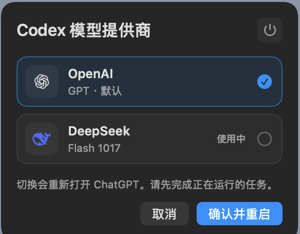

macOS 菜单栏工具
点击打开。
确认后切换。
为 Codex Desktop 选择 OpenAI 或 DeepSeek Flash 1017。平时照常启动，临时换模型时再打开切换器。
macOS 14+ · Apple 芯片与 Intel · MIT

安装后怎么用
-
打开切换器
把应用移到「应用程序」，然后从菜单栏打开切换面板。需要先安装官方 ChatGPT Desktop。
-
选择并确认
选 OpenAI 或 DeepSeek。确认时，切换器会退出并重新打开 ChatGPT。切换前请先结束正在运行的任务。
-
新建本地会话
OpenAI 使用常规启动设置。DeepSeek 只对这次启动生效，首次使用需配置自己的 DeepSeek API Key。